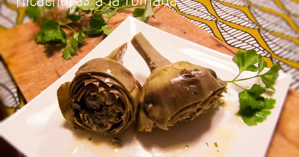
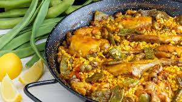

Las recetas tradicionales de España e Italia
Elaboración de la paella
Elaboración de las alcachofas
Tiempo en Valencia
Tiempo en Roma
Contacta con Nosotros
Alcachofas a la Romana
-
País:
Italia
Ciudad:
Roma
-
Descripción:
En la cocina tradicional romana la alcachofa está en el podio de las verduras más usadas,
especialmente la de la variedad mammola o carciofo romanesco.Son enormes, y de hojas tiernas
y se puede aprovechar más cantidad de flor que en las que tenemos por aquí. Es casi imposible comer en Roma,
especialmente en el Ghetto, y no probar alcachofas a la romana o a la judía, como entrante o acompañamiento.
-
Imagen:

-
Ingredientes para 4 personas:
- 4 Alcachofas
- 1 diente Ajo
- 1 ramito Perejil
- 6 hojas Menta
- Sal
- Pimienta negra
- Aceite de oliva
-
Elaboración:
Las alcachofas a la romana se preparan pelando y limpiando las alcachofas,
eliminando las hojas exteriores más duras y cortando las puntas y la parte superior.
Luego, se sumergen en agua con limón para evitar la oxidación. En una sartén, se calienta aceite
de oliva y se saltean ajo picado
hasta que esté fragante, antes de agregar las alcachofas y dorarlas.
Después, se incorpora perejil picado, un poco de vino blanco y
se cocina hasta que el alcohol se evapore.
Se completa añadiendo caldo de verduras y hierbas como romero y tomillo,
cocinando
a fuego lento hasta que las alcachofas estén tiernas. El plato se sirve con un toque de limón
para realzar
su sabor, creando así una deliciosa especialidad italiana.
-
WEB:
Si quieres visitar la página desde la que hemos sacado la receta pincha
aquí
-
PDF:
Si quieres descargar el pdf pincha
aquí
Tiempo climático en Roma:
Paella Valenciana
-
País:
España
Ciudad:
Valencia
-
Descripción:
Hay poca gente que no caiga rendida ante la paella valenciana. La Paella es probablemente la receta más aclamada, popular y conocida de nuestra gastronomía. Se trata del plato insignia de toda una región, el cual ha permitido que la riqueza culinaria española traspase fronteras.
-
Imagen:

-
Ingredientes para 4 personas:
- 350 gramos de arroz redondo
- 600 gramos de carne de pollo
- 400 gramos de carne de conejo
- 1 tomate maduro
- 150 gr de bajoqueta (judía verde plana) o ferradura
- 150 gr de garrofó
- 3 cucharadas generosas de aceite de oliva
- Una cucharadita de pimentón dulce
- Un pellizco de azafrán de hebra
- Agua
- Sal
Elaboración:
La paella valenciana es un plato tradicional español. Para prepararla, dora pollo y conejo en aceite, luego retíralos. Sofríe cebolla, ajo, pimientos y tomate en la misma sartén. Agrega arroz y colorante, reincorpora la carne, y vierte caldo de pollo. Cocina hasta que el arroz absorba el caldo. Finaliza con un socarrat crujiente en la base. Sirve con limón y perejil. Es un plato emblemático de la región de Valencia.
WEB:
Si quieres visitar la página desde la que hemos sacado la receta pincha
aquí
PDF:
Si quieres descargar el pdf pincha
aquí
Tiempo climático en Valencia: